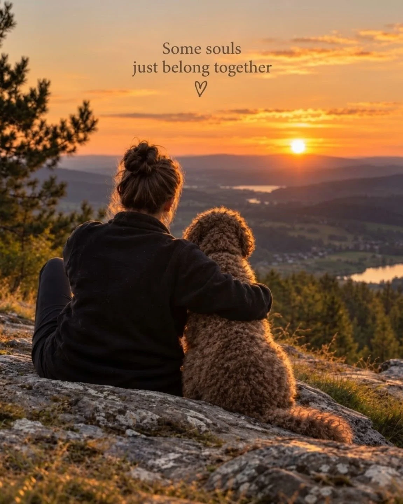

01 · Our story
A personal portrait
Company,
kept close
This portrait sits at the heart of the portfolio. It shows an evening on a rocky summit, a Lagotto held close while the sun lowers over the valley.
The photograph is presented exactly as supplied, full frame, so the moment stays intact. Nothing is cropped away and nothing is added around it.
No name, biography or personal details are added here, because none were supplied. What matters is visible in the frame: closeness, patience and a shared love of high, quiet places.
About this portrait
Photograph: owner supplied, file hero-summit-sunset.jpg. Subject: as shown. Further details: to be confirmed by the owner.